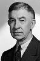

Country:United States, 73 minutes
Spoken languages:English, Arabic, French
Genres:Horror, Drama, Fantasy
Director(s):Karl Freund
Writer(s):John L. Balderston
Video Codec:Unknown
Number: 2552


Certification:NR
Storyline:
An ancient Egyptian priest named Imhotep is revived when an archaeological expedition finds his mummy and one of the archaeologists accidentally reads an ancient life-giving spell. Imhotep escapes from the field site and searches for the reincarnation of the soul of his lover.
Cast: 


Medium: Original DVD,
Comments: Part of: The Mummy - The Legacy Collection
Loaned: No
Aspect ratio: Unknown